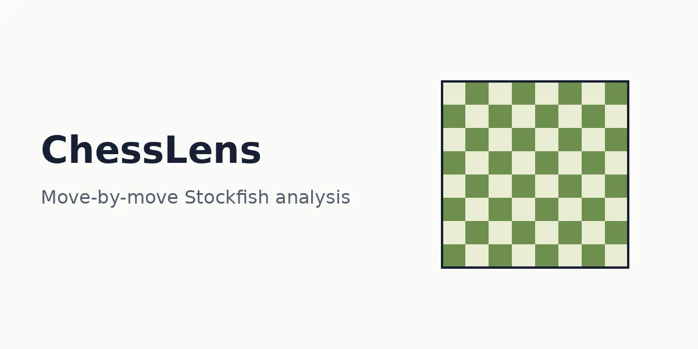

Full-stack · Live
ChessLens: chess game analytics platform
ChessLens imports a player's games from Chess.com and Lichess and analyses every move with the Stockfish engine, showing evaluation bars, accuracy trends and opening performance across a 3,600-entry ECO opening database.
- Background analysis runs through a BullMQ and Redis job queue with a dedicated worker, plus a synchronous fallback.
- One persistent Stockfish process serves requests in order; a heuristic engine sorts mistakes into seven weakness types per player.
- The Groq API explains blunders in plain language and links to a puzzle trainer built on the Lichess puzzle database.